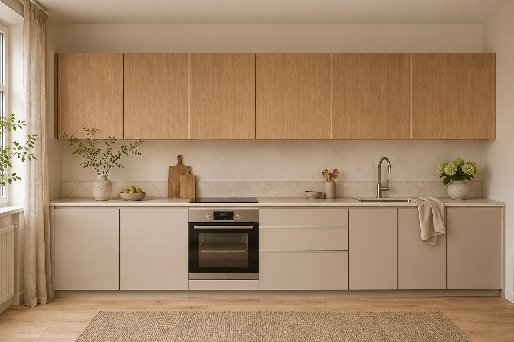
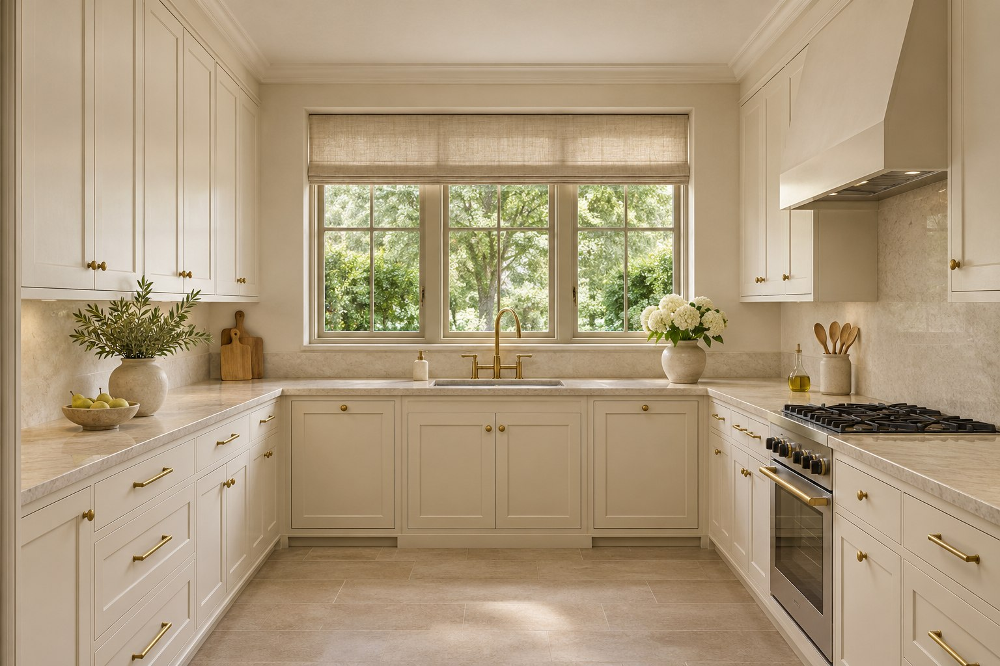

Прямая кухня «Лён»
В один ряд
Гарнитур вдоль одной стены оставляет больше свободного пространства для обеденной зоны.
- Подходит для узких кухонь
- Рабочая зона в одном ряду
Четыре варианта планировки. Посмотрите, как по-разному можно разместить рабочую зону, хранение и технику.


В один ряд
Гарнитур вдоль одной стены оставляет больше свободного пространства для обеденной зоны.

Г-образная
Две рабочие стороны и свободный центр комнаты. Мягкий оливковый тон сочетается с тёплой древесной фактурой.

Вдоль трёх стен
Рабочая поверхность с трёх сторон даёт место для подготовки продуктов и хранения.

С отдельным островом
Отдельный остров добавляет рабочую поверхность и делит открытую комнату на зоны.